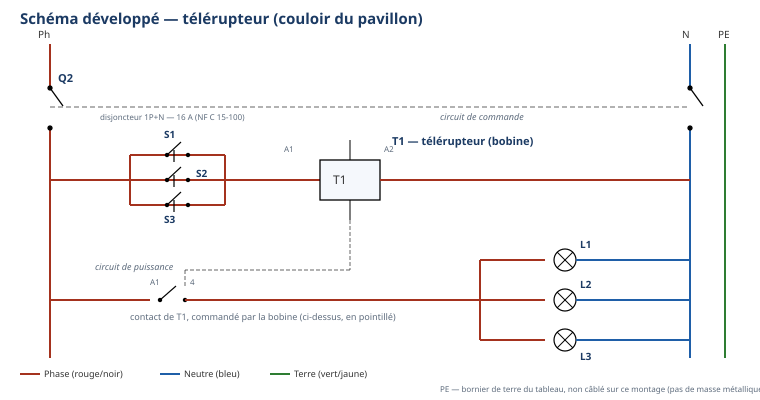
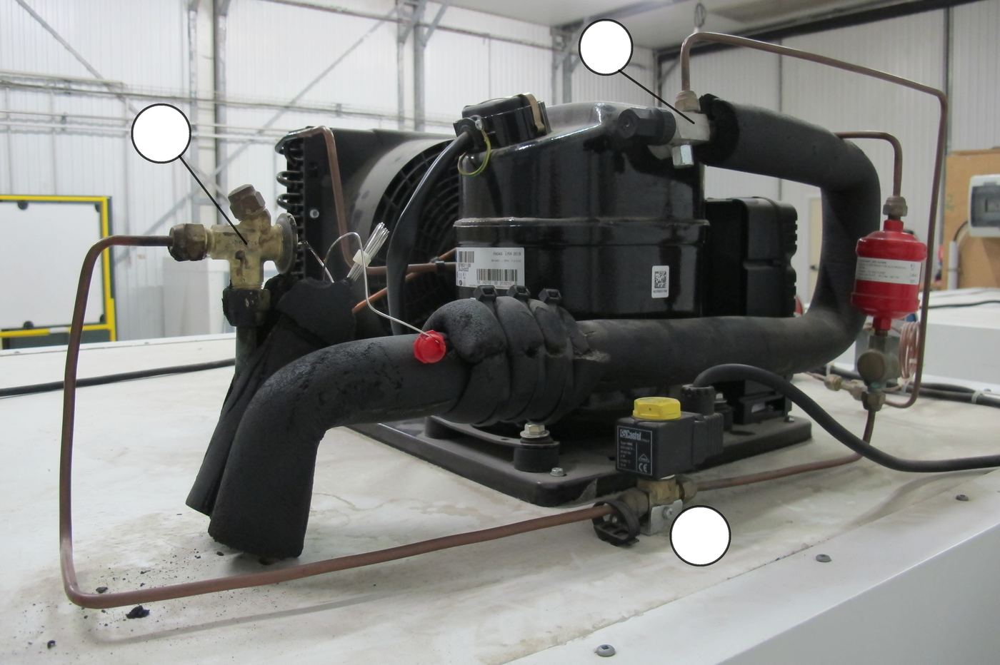

Vous voici à la 13e semaine de votre première année de formation. Ordre d'intervention
n° OI-2026-EVAL-S3S4-01 : le chantier d'évaluation reprend le pavillon que vous avez préparé depuis la
rentrée — la liaison frigorifique brasée, le circuit d'éclairage câblé. Aujourd'hui, sur 3 postes
indépendants (froid, électricité, théorie), vous montrez seul(e) ce que vous savez faire : assembler
par brasage tendre et prouver l'étanchéité, câbler un télérupteur d'après un schéma, expliquer à
l'écrit la relation pression/température et les composants d'une installation réelle. On évalue ce que vous
avez déjà travaillé plusieurs fois depuis É1 — rien de nouveau ne vous est demandé aujourd'hui, mais
l'exigence monte d'un cran par rapport à É1.
Tâches
T10 Repérer, raccorder, assembler les réseaux fluidiques, aérauliques et électriques T11 Contrôler les circuits hors fonctionnement T12 Respecter les consignes de sécurité et protéger la zone de travail
Savoirs
S2.1 Outils, normes et représentation S2.2 Lecture de plan S5.1 Systèmes thermodynamiques à détente directe S5.5 Réseaux fluidiques et mécanique des fluides
Savoir-être
La sécurité EST le savoir-être aujourd'hui, comme à É1 : EPI portés sans qu'on vous le rappelle, gestes interdits respectés (flamme, pression, tension), honnêteté du relevé et de l'auto-positionnement
Compétences (≤ 4) — Évaluation
ÉvaluationC3.4 Façonner, raccorder, assembler, isoler les circuits (frigorifique, hydraulique, aéraulique) ÉvaluationC3.6 Câbler, repérer, connecter les liaisons électriques et électroniques ÉvaluationC4.5 Mesurer, comparer des grandeurs ConfortementC3.9 Vérifier l'étanchéité d'un circuit (frigorifique, hydraulique) avant mise en service — observée au poste froid, poids réduit
Ce qui est évalué aujourd'hui — les 3 postes
Poste
Durée
Contenu
Compétence(s) — ancrage
FROID
4 h
Réaliser 2 emboîtures brasées au chalumeau (assemblage définitif), montrées au professeur avant brasage, puis prouver l'étanchéité à l'eau savonneuse (mise en pression par le professeur)
ÉvaluationC3.4 — sur T10 · S2.1 ConfortementC3.9 — sur T11 · T12 · S5.5
ÉLEC
4 h
Câbler un télérupteur d'après le schéma fourni, circuit protégé (DDR + disjoncteur identifiés sur le tableau réel), contrôle hors tension consigné avant tout appel
ÉvaluationC3.6 — sur T10 · S2.2
THÉORIE
2 h
Écrit individuel : lecture d'un couple pression/température sur une réglette fournie par le professeur, identification de composants sur photos et fonction (9 fonctions sourcées de S3-T1)
Le poste théorie porte lui-même une compétence
notée (C4.5, sur la lecture de la relation pression/température) : c'est une différence avec É1, où le poste
théorie n'était qu'un appui. La partie « composants » du poste théorie reste, elle, un appui qui croise C3.4.
⏱ Consignes générales — valables pour les 3 postes
Poste individuel : vous travaillez seul(e), sans aide ni échange avec un camarade, sur chacun des 3 postes.
Chaque poste est autoportant : ce document contient tout ce qu'il faut, lisez chaque partie en entier avant d'agir.
Matériel autorisé : uniquement celui indiqué à chaque poste ; pas de note personnelle, pas de téléphone.
La sécurité renforcée de S3-F2 (flamme) et de S3-F1 (pression) et de S3-E2 (électricité) s'applique
sans exception : l'évaluation n'exonère de rien.
En cas de doute de sécurité, levez la main et attendez le professeur avant d'agir — c'est le seul
moment où il intervient sur votre geste.
Vous complétez votre auto-positionnement honnêtement, avant que le professeur ne corrige (feuille finale).
Vous avez réalisé des emboîtures brasées plusieurs fois depuis S3-F2 : le geste de
décapage, d'emboîture, de brasage au chalumeau et de contrôle visuel du cordon vous est acquis. Aujourd'hui,
vous réalisez 2 emboîtures cotées sur un tube cuivre 14 × 1, seul(e), dans les conditions d'une
évaluation.
Matériel autorisé pour ce poste
1 longueur de tube cuivre 14 × 1 (longueur totale selon le poste, à faire valider par le professeur)
Poste de brasage (chalumeau, gaz) — consommable
Métal d'apport (baguette de brasage tendre) + flux décapant (consommables, selon la notice du produit de l'atelier)
Toile abrasive ou brosse métallique (décapage mécanique avant brasage)
Outil d'expansion (pince à emboîture), adapté au diamètre 14 mm
Mètre ou réglet + feutre marqueur
Support ou pince pour maintenir le tube pendant le brasage
Gants anti-chaleur, lunettes de protection (obligatoires)
Extincteur localisé au poste de brasage (vérifié en début de créneau)
Bac de récupération des chutes de cuivre
⚠ Rappel sécurité — la flamme, comme en S3-F2 — Gants anti-chaleur et lunettes
portés avant tout allumage ; jamais de flamme dirigée vers un camarade ; jamais de flamme à proximité d'une
bouteille de gaz ; jamais toucher un tube qui vient d'être brasé à main nue ; jamais poser le chalumeau allumé,
même un instant. 🚨 En cas d'incident : arrêtez le poste, alertez le professeur ; en cas de
brûlure, refroidissez sous l'eau tempérée, sans interrompre le refroidissement. Trousse de secours et
extincteur localisés au rituel d'entrée de l'atelier.
Les 2 emboîtures demandées
Cotes reprises à l'identique de l'exercice source de S3-F2 (intervalle de
100 mm entre deux repères) : vous réalisez 2 emboîtures, la première à 100 mm d'une extrémité du
tube, la seconde à 200 mm de la même extrémité (soit 100 mm après la première), tolérance ± 2 mm
sur chaque cote, comme en S3-F2.
☐ 1. Tracer au feutre les 2 repères, aux cotes 100 mm et 200 mm depuis l'extrémité indiquée par le professeur
☐ 2. Décaper chaque zone d'emboîture (toile abrasive)
☐ 3. Réaliser les 2 emboîtures à l'outil d'expansion
☐ 4. Vérifier les 2 cotes obtenues avant d'appeler le professeur
Tableau de relevé — les 2 emboîtures
Emboîture
Cote demandée
Cote obtenue
Dans la tolérance (± 2 mm) ?
1
100 mm
☐ Oui ☐ Non
2
200 mm
☐ Oui ☐ Non
⚠ AVANT DE BRASER — Montrez vos 2 emboîtures au professeur. C'est une
obligation, pas une option, comme en S3-F2 : on ne brase jamais une emboîture qui n'a pas été validée.
Visa professeur — contrôle obligatoire avant brasage
☐ Les 2 emboîtures sont conformes à la cote (± 2 mm) ☐ Décapage vérifié ☐ Autorisé(e) à braser
POSTE FROID — brasage des 2 emboîtures et contrôle visuel
C3.4 sur T10 · S2.1 — Évaluation≈ 45 min
Une fois vos 2 emboîtures validées par le professeur, brasez-les l'une après
l'autre, au poste de brasage. Après chaque brasage, laissez refroidir sans toucher, puis contrôlez
visuellement le cordon avant de passer à la suivante.
☐ 1. Allumer le chalumeau selon la procédure du poste
☐ 2. Chauffer uniformément le raccord, jamais la baguette directement
☐ 3. Approcher le métal d'apport au point le plus chaud : il doit être aspiré tout autour du joint
☐ 4. Retirer la flamme dès que le cordon est complet, sans surchauffer
☐ 5. Laisser refroidir sans y toucher — le tube reste chaud longtemps
☐ 6. Contrôler visuellement chaque cordon avant de passer au suivant
Tableau de contrôle visuel — les 2 cordons
Emboîture
Continu ?
Brillant ?
Sans manque ?
Sans surchauffe ?
Conforme ?
1
☐ O ☐ N
☐ O ☐ N
☐ O ☐ N
☐ O ☐ N
☐ O ☐ N
2
☐ O ☐ N
☐ O ☐ N
☐ O ☐ N
☐ O ☐ N
☐ O ☐ N
Question — Un de vos deux cordons vous semble « limite », pas franchement
mauvais mais pas net non plus. Que faites-vous : vous continuez en espérant que ça passe, ou vous le signalez
au professeur ?
Visa professeur — pièce brasée
☐ Les 2 cordons sont conformes ☐ Refroidissement respecté avant manipulation ☐ Pièce présentée
POSTE FROID — partie B : prouver l'étanchéité à l'eau savonneuse
C3.9 sur T11 · T12 · S5.5 — Confortement≈ 25 min
Comme en S3-F1, vous prouvez que votre pièce brasée est étanche avant de la
livrer. Cette compétence est en statut Confortement aujourd'hui (poids réduit) : elle est observée,
mais pèse moins que C3.4 dans votre positionnement global.
La mise sous pression — un geste exclusivement professeur
1. Votre pièce brasée et refroidie est contrôlée visuellement par vous-même, avant tout appel.
2. Le professeur raccorde seul la station de mise en pression à votre pièce, au gaz neutre.
3. Le professeur règle seul la pression d'essai — valeur affichée au manomètre, à faire valider par lui.
4. Vous badigeonnez les 2 emboîtures à l'eau savonneuse, seulement une fois la pression stabilisée et
confirmée par le professeur.
5. Le professeur dépressurise seul en fin de contrôle.
⚠ Gestes interdits — rappel absolu — Jamais d'oxygène ni d'air comprimé
pour une épreuve d'étanchéité, quelle que soit la situation : seul un gaz neutre, mis en place par le
professeur, est utilisé. Jamais toucher, ouvrir ou fermer la bouteille de mise en pression. Jamais desserrer un
raccord tant que la pièce est sous pression.
Fiche de relevé — contrôle d'étanchéité
Point contrôlé
Bulles observées ?
Conforme (étanche) ?
Emboîture 1
☐ Oui ☐ Non
☐ Oui ☐ Non
Emboîture 2
☐ Oui ☐ Non
☐ Oui ☐ Non
Signalez le résultat tel qu'il est, même en cas
de fuite : l'honnêteté du contrôle fait partie de l'évaluation du savoir-être, comme en S3-F1.
Question — Pourquoi utilise-t-on un gaz neutre et jamais de l'oxygène ni de
l'air comprimé pour cette épreuve ?
Visa professeur — contrôle d'étanchéité
☐ Contrôle réalisé sur les 2 emboîtures ☐ Résultat noté honnêtement ☐ Pièce dépressurisée par le professeur
Visa : ________________ Heure : ________________
Rangement — poste froid
☐ 1. Vérifier qu'aucun tube brasé n'est encore chaud avant de quitter le poste
☐ 2. Éteindre le chalumeau et fermer la bouteille de gaz du poste
☐ 3. Trier les chutes de cuivre, nettoyer le poste, ranger l'outillage
POSTE ÉLEC — câblage d'un télérupteur, circuit protégé
C3.6 sur T10 · S2.2 — Évaluation≈ 4 h
Comme en S3-E2, vous câblez un télérupteur qui commande une lampe depuis
plusieurs boutons poussoirs. Vous suivez la méthode déjà connue : lire le schéma → repérer la protection sur
le tableau réel → préparer la platine → câbler → CONTRÔLE HORS TENSION → mise sous tension UNIQUEMENT par le
professeur. Vous ne mettez jamais votre platine sous tension vous-même.
La consignation — rituel en 4 étapes (rappel NF C 18-510)
1. Couper — le disjoncteur du poste reste ouvert pendant tout le câblage.
2. Vérifier l'absence de tension (VAT) — au multimètre, position voltmètre.
3. Condamner / signaler — personne d'autre ne remet l'alimentation ; seul le professeur ferme le disjoncteur.
4. Travailler hors tension — tout le câblage et le contrôle se font disjoncteur ouvert.
⚠ Gestes interdits — jamais toucher un fil ou une platine sans avoir vérifié
l'absence de tension ; jamais câbler ou modifier une platine sous tension ; jamais mettre une platine sous
tension vous-même ; jamais raccorder un bouton poussoir en série (toujours en parallèle). 🚨 En cas
d'incident : couper (arrêt d'urgence de l'atelier), alerter le professeur, ne jamais déplacer un camarade
électrisé.
Repérer sur site — DDR et disjoncteur (avant tout câblage)
Comme en S3-E2, rendez-vous devant le tableau électrique réel de l'atelier,
avec le professeur. Repérez le DDR (dispositif différentiel résiduel, protège les personnes) et le
disjoncteur (protège le circuit) du départ concerné par votre poste. Cochez et complétez.
☐ 1. J'ai repéré le DDR du circuit concerné par mon poste
☐ 2. J'ai repéré le disjoncteur du circuit concerné par mon poste
☐ 3. J'ai lu, sur l'étiquette du DDR, sa sensibilité (en mA)
Repère
Ce que je lis sur l'appareil réel
Sensibilité du DDR (mA)
Calibre du disjoncteur (A)
Repère : la norme NF C 15-100 impose,
pour l'habitat, un DDR de 30 mA (D'après : documents S3-E1). La valeur exacte lue sur le tableau du poste
est à confirmer avec le professeur.
Matériel autorisé
Platine en bois équipée d'un rail oméga
Disjoncteur magnétothermique (repère Q2 sur votre schéma)
Le schéma développé du télérupteur (repères Q2, T1, S1/S2/S3, L1) figure ci-dessous
en réduit et en annexe pleine page en fin de document : gardez l'annexe sous les yeux pendant tout le
câblage.

Préparer et câbler
☐ 1. Vérifier que la platine est hors tension (disjoncteur Q2 ouvert)
☐ 2. Positionner Q2, T1, les 3 boutons poussoirs S1/S2/S3 et le support de lampe L1 selon le schéma, fixer sans forcer
☐ 3. Câbler le circuit de commande : phase (après Q2) → S1, S2, S3 en parallèle → borne A1 (ou B) de T1 → borne A2 → neutre
☐ 4. Câbler le circuit de puissance : phase (après Q2) → contact de sortie de T1 → lampe L1 → neutre
☐ 5. Vérifier que chaque connexion est bien serrée et conforme aux couleurs normalisées
Mesure de continuité (multimètre, disjoncteur ouvert)
Valeur attendue
Valeur mesurée
Conforme ?
Continuité du circuit de commande (un bouton poussoir appuyé)
proche de 0 Ω
☐ Oui ☐ Non
Continuité du circuit de commande (aucun bouton appuyé)
résistance infinie
☐ Oui ☐ Non
Si une valeur ne correspond pas à celle
attendue, signalez-le vous-même au professeur avant de l'appeler pour le contrôle final : l'honnêteté du
contrôle fait partie de l'évaluation du savoir-être. Une fois votre contrôle conforme, appelez le
professeur : lui seul ferme le disjoncteur.
Essais (réalisés par le professeur)
Contrôle et essais
☐ Câblage vérifié conforme au schéma par le professeur
☐ Appui sur S1 : la lampe change d'état
☐ Appui sur S2 : la lampe change d'état
☐ Appui sur S3 : la lampe change d'état
Visa professeur : ________________ Heure : ________________
Question — pourquoi un DDR en plus du disjoncteur ?
Question — Le disjoncteur (Q2) protège déjà votre circuit contre les
surcharges et les courts-circuits. Pourquoi le tableau comporte-t-il, en plus, un DDR ? Que protège-t-il, que le
disjoncteur seul ne protège pas ?
Rangement — poste élec
☐ 1. Remettre la platine hors tension (disjoncteur ouvert, débranché)
☐ 2. Remettre la molette du multimètre sur OFF, ranger les cordons sans coude serré
☐ 3. Ranger les fils, sans les plier de façon serrée
☐ 4. Vérifier que le poste est propre et dégagé pour l'élève suivant
Cet écrit reprend, sous une autre forme, ce que vous avez travaillé en S4-T1 (la
relation pression/température) et en S3-T1 (les composants). Vous répondez seul(e), sans note ni téléphone.
Exercice 1 — lire un couple pression/température
⚠ Le tableau ci-dessous est à compléter par le professeur, avec la réglette P/T
réelle de l'atelier ou un tableau fourni, avant la passation. Aucune valeur n'est imprimée dans ce
document : c'est une consigne, pas un oubli — comme en S4-T1, on ne recopie jamais un couple pression/température
de mémoire.
Fluide (précisé par le professeur)
Pression donnée (bar)
Température de changement d'état à lire (°C)
À partir de la réglette ou du tableau fourni par le professeur, complétez la
température de changement d'état correspondant à chaque pression donnée.
Question a — Sur les deux lignes du tableau, la pression est-elle plus
haute ou plus basse sur la première ligne que sur la seconde ? La température de changement d'état suit-elle le
même sens (elle monte quand la pression monte, ou l'inverse) ?
Question b — Avec vos propres mots, complétez la phrase à retenir vue en
S4-T1 : « La ______________ choisit la ______________ à laquelle un fluide change d'état. »
Question c — Sur la croix du frigoriste, l'évaporateur travaille à
basse pression et le condenseur à haute pression. Expliquez avec vos mots pourquoi c'est cette
différence de pression qui permet à la machine de « fabriquer » du froid dans l'évaporateur.
Exercice 2 — identifier des composants et donner leur fonction
Vous avez nommé les 13 composants d'une installation frigorifique réelle en
S3-T1. Sur les 4 photos ci-dessous, plusieurs repères sont entourés : seuls les repères listés dans le
tableau sont notés aujourd'hui (les autres repères visibles sur les photos ne font pas partie de cette
évaluation). Pour chacun, écrivez le nom du composant et sa fonction.
Photo 1Photo 2

Photo 3Photo 4
Photo
Repère (position)
Nom du composant
Fonction
1
Gros cylindre noir, bas
1
Roue à ailettes (ventilateur), centre
2
Cylindre noir, centre
2
Cylindre rouge, gauche
2
Petit élément, bas gauche
2
Petit boîtier, droite
3
Raccord laiton, haut gauche
3
Boîtier jaune et noir, bas droite
4
Bloc blanc, haut gauche
Seules les 9 fonctions sourcées vues en
S3-T1 sont exigibles aujourd'hui (compresseur, condenseur, détendeur thermostatique, évaporateur, réservoir de
liquide, filtre déshydrateur, voyant liquide, électrovanne, pressostat combiné).
Emboîtures et brasage conformes avec l'aide du professeur.
Réalise seul(e) les 2 emboîtures cotées (± 2 mm) ET des cordons conformes (continus, brillants, sans manque, sans surchauffe).
Comme « Acquis », et repère seul(e) un défaut avant de présenter la pièce.
C3.9 Vérifier l'étanchéité (Confortement)
sur T11 · T12 · S5.5
Compétence non observée ce jour.
Ne sait pas conduire le contrôle malgré l'aide, ou fait un geste interdit (touche la bouteille).
Réalise le contrôle avec l'aide du professeur.
Réalise seul(e) le contrôle sur les 2 emboîtures, note honnêtement le résultat.
Comme « Acquis », et explique pourquoi on ne teste jamais à l'oxygène ni à l'air comprimé.
C3.6 Câbler, repérer, connecter les liaisons
sur T10 · S2.2
Compétence non observée ce jour.
Câblage non conforme au schéma, ou consignation non respectée, ou DDR/disjoncteur non repérés.
Câblage fonctionnel avec l'aide du professeur ; repérage DDR/disjoncteur réalisé avec aide.
Câble seul(e) le télérupteur, conforme au schéma et aux couleurs, repère seul(e) le DDR et le disjoncteur, contrôle hors tension réalisé avant tout appel.
Comme « Acquis », et explique pourquoi un DDR est nécessaire en plus du disjoncteur.
C4.5 Mesurer, comparer des grandeurs
sur T11 · S5.1
Compétence non observée ce jour.
Ne sait pas lire un couple pression/température sur la réglette fournie, même avec aide.
Lit un couple avec l'aide du professeur, ou explique le sens de variation avec aide.
Lit seul(e) les couples pression/température demandés, explique correctement le sens de variation et le lien avec l'évaporateur/condenseur.
Comme « Acquis », et relie spontanément la lecture au rallye de relevés vécu en S4-F1.
Savoir-être — sécurité, rigueur, honnêteté
observation continue
Non observé ce jour.
EPI incomplets, geste dangereux (flamme, pression, tension) ou valeur inventée : niveau 1 automatique.
Sécurité globalement respectée, quelques rappels nécessaires.
Sécurité et rigueur respectées sans rappel, mesures et lectures honnêtes, défauts signalés spontanément.
Comme « Acquis », et reste rigoureux(se) jusqu'au rangement complet des postes.
Positionnez-vous honnêtement AVANT que le
professeur ne corrige : l'écart entre votre auto-positionnement et la correction fait partie de l'observation
du savoir-être.
Visa professeur : ________________ Heure de fin : ________________
Documents à remettre
Ce sujet complété (3 postes : tableaux, câblage contrôlé, écrit théorie, auto-positionnement)
La pièce cuivre brasée (poste froid) et la platine câblée (poste élec), contrôlées par le professeur
D'après : documents S3-F2
(EXERCICE emboîture et brasage, F. Henninot — cotes 100 mm et tolérance ± 2 mm reprises à l'identique, réduites
à 2 emboîtures) ; documents S3-F1 (contrôle d'étanchéité à l'eau savonneuse, geste interdit oxygène/air
comprimé) ; documents S3-E2 (le-telerupteur.pdf + le-telerupteur-a-completer.pdf, Fiche Communication
technique Électricité bâtiment, 02_CAP-IFCA/S4-Electricite — schéma repères Q2/T1/S1-S2-S3/L1, version corrigée) ;
documents S3-E1 (DDR 30 mA, NF C 15-100) ; documents S3-T1 (TP 02 — Les composants frigorifiques et son corrigé,
F. Henninot — 9 fonctions sourcées) ; documents S4-T1 (Le froid — exercices élèves, manuel de physique du froid
du lycée Jacques Raynaud — relation pression/température). Aucune valeur n'est inventée : cotes reprises des
sources, valeurs P/T à lire sur la réglette réelle de l'atelier, valeurs électriques sourcées NF C 15-100.
⚠ À imprimer en A3 PAYSAGE (une feuille par
poste) : c'est le document à garder sous les yeux pendant tout le câblage. Repères Q2 (disjoncteur), T1
(télérupteur), S1/S2/S3 (boutons poussoirs), L1 (lampe) — version corrigée, identique à celle vue en S3-E2.